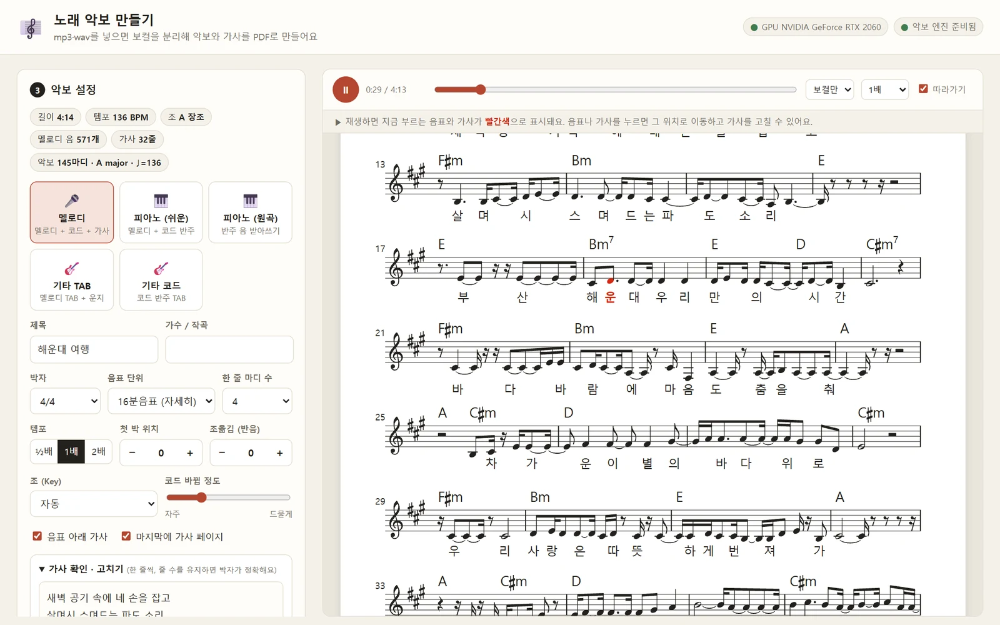
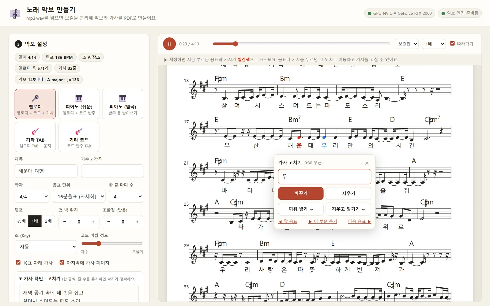
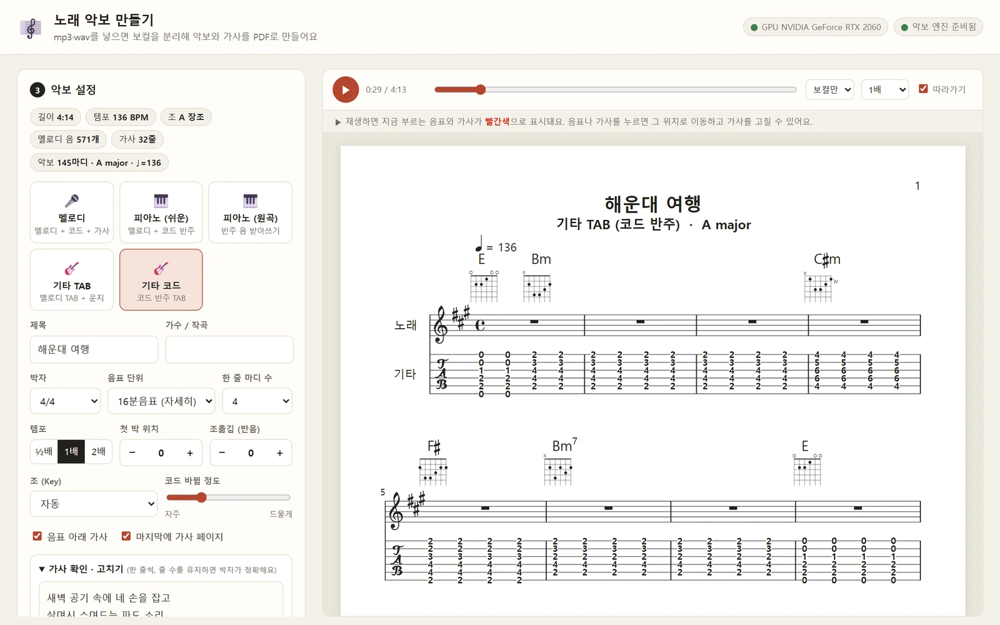

재생하면 지금 부르는 곳이
빨간색으로
악보 위 ▶ 버튼만 누르면 노래에 맞춰 음표와 가사가 표시되고 악보가 저절로 넘어가요. 어디가 틀렸는지 귀와 눈으로 바로 확인할 수 있어요.
- 원곡 / 보컬만 / 반주만 골라 듣기
- 0.5배 · 0.75배 느리게 듣기
- 음표를 누르면 그 위치부터 재생
mp3·wav를 넣으면 보컬을 분리해 멜로디·코드·가사를 받아쓰고, 멜로디 · 피아노 · 기타 TAB 악보를 PDF로 만들어 드려요. 재생하며 틀린 곳을 바로 고칠 수 있어요.

4분짜리 노래 기준 GPU에서 2~3분이면 끝나요. 음원은 PC 밖으로 나가지 않아요.
같은 분석 결과로 다섯 가지 악보를 바로 바꿔 볼 수 있어요.
악보 위 ▶ 버튼만 누르면 노래에 맞춰 음표와 가사가 표시되고 악보가 저절로 넘어가요. 어디가 틀렸는지 귀와 눈으로 바로 확인할 수 있어요.
음표나 가사를 누르면 작은 창이 열려요. 고친 내용은 화면에 바로 보이고 자동으로 저장돼요.

반주에서 찾은 코드 진행으로 기타 코드 운지표와 스트로크 TAB, 피아노 왼손 반주를 함께 만들어요. 조옮김 버튼 하나로 부르기 편한 키로 바꿀 수 있어요.

음원과 분석 결과는 인터넷으로 보내지 않아요. 설치 후에는 인터넷 없이도 써요.
한국어 · 영어 · 일본어 · 중국어 가사를 받아써요. 한글은 한 글자씩 음표에 붙어요.
NVIDIA 그래픽카드가 있으면 알아서 GPU로 빠르게 분석해요.
A4에 맞춰 줄이 잘리지 않게 나누고, 마지막 장에 가사 페이지를 붙여요.
분리된 보컬과 반주를 wav로 저장해 연습용 MR로 쓸 수 있어요.
다른 악보 프로그램이나 작곡 프로그램에서 이어서 작업할 수 있어요.
Python 같은 프로그램을 따로 설치할 필요가 없어요.
설치 중 열리는 창에서 분석 라이브러리(약 3.5GB)를 받아요. 인터넷 속도에 따라 2~15분 걸리니 창을 닫지 말고 기다려요.
바탕화면의 「노래 악보 만들기」를 열고 mp3·wav 파일을 끌어다 놓으면 끝이에요.
처음 곡을 분석할 때 가사 인식·보컬 분리 모델(약 2GB)을 한 번 더 내려받아요.
자동 채보 결과는 초안이에요. 보컬 분리 덕분에 멜로디와 가사는 꽤 정확한 편이지만, 꾸밈음이 많은 창법·랩·화음 코러스는 다듬어야 할 수 있어요. 재생하며 틀린 곳을 찾아 음표를 눌러 고치거나, MusicXML로 저장해 MuseScore에서 다듬으세요.
네, CPU로도 동작해요. 다만 4분짜리 곡 하나에 10분 이상 걸릴 수 있어요. NVIDIA 그래픽카드가 있으면 설치할 때 자동으로 GPU 버전이 깔려 2~3분이면 끝나요.
「템포 ½배 / 2배」 버튼과 「첫 박 위치 − / +」로 바로 맞출 수 있어요. 바꾸면 악보가 즉시 다시 그려져요.
왼쪽 가사 칸에 빠진 줄을 써 넣고 「악보 만들기」를 누르면, 인식된 글자 순서에 맞춰 빠진 글자를 앞뒤 음표 사이에 차례로 넣어요. 한 글자씩은 음표를 눌러 고칠 수 있어요.
아니요. 모든 분석은 내 PC 안에서 이루어져요. 인터넷은 처음 설치할 때와 첫 분석 때 라이브러리·모델을 내려받는 데만 써요.
만든 악보는 개인 학습·연습 용도로만 사용해 주세요. 악보를 배포하거나 판매하려면 원곡 권리자의 허락이 필요해요.
Windows 「설정 → 앱 → 설치된 앱」에서 「노래 악보 만들기」를 제거하면 돼요. 작업 파일과 AI 모델도 함께 지울지 물어봐요.